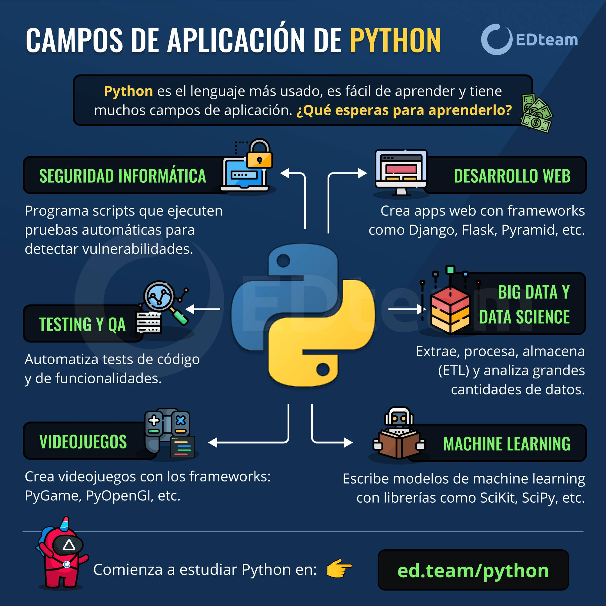

1. HTML
HTML (Hypertext Markup Language) es un lenguaje de marcado que se utiliza para estructurar y presentar el contenido de una página web. Es el componente más básico de la web. ¿Qué hace HTML? Define la estructura y el significado del contenido web Indica a los navegadores cómo mostrar texto, imágenes, encabezados y otros elementos multimedia Define la jerarquía de títulos, el flujo de párrafos y la ubicación de imágenes ¿Cómo se creó HTML? Tim Berners-Lee creó la primera versión de HTML en 1991 El objetivo inicial era servir como un medio de transmisión entre los científicos que trabajaban en la Física de alta energía ¿Cómo se relaciona HTML con otros lenguajes? HTML necesita la ayuda de las Hojas de Estilo en Cascada (CSS) y de JavaScript para crear la mayor parte del contenido del sitio web Estos tres lenguajes son los fundamentos del desarrollo front-end ¿Qué versiones de HTML existen? HTML 3.0, HTML 4.0, HTML 5.0 son algunas de las versiones de HTML

2. Python
Python es un lenguaje de programación de alto nivel, interpretado y de código abierto, conocido por su sintaxis clara y legible, que se asemeja al lenguaje natural, lo que facilita su aprendizaje y uso. Características principales de Python: Sintaxis clara y legible: La sintaxis de Python se basa en la indentación en lugar de llaves, lo que hace que el código sea más fácil de leer y entender. Lenguaje de propósito general: Python se utiliza en una amplia variedad de aplicaciones, incluyendo desarrollo web, ciencia de datos, aprendizaje automático, automatización, y más. Tipado dinámico: No es necesario declarar explícitamente el tipo de variable, lo que facilita el desarrollo rápido. Interpretado: El código Python se ejecuta línea por línea, lo que facilita la depuración. De código abierto: Python es gratuito y de código abierto, lo que significa que cualquiera puede usarlo, modificarlo y distribuirlo. Multiplataforma: Python es compatible con diferentes sistemas operativos, como Windows, macOS y Linux. Gran comunidad y documentación: Python cuenta con una gran comunidad de desarrolladores y una extensa documentación, lo que facilita el aprendizaje y la resolución de problemas. Usos comunes de Python: Desarrollo web: Frameworks como Django y Flask facilitan el desarrollo de aplicaciones web. Ciencia de datos y aprendizaje automático: Bibliotecas como NumPy, Pandas, Scikit-learn y TensorFlow son herramientas poderosas para el análisis de datos y la construcción de modelos de aprendizaje automático. Automatización: Python se puede utilizar para automatizar tareas repetitivas en el ordenador, como la gestión de archivos o la ejecución de scripts. Desarrollo de software: Python se utiliza para desarrollar una amplia variedad de aplicaciones, desde software de escritorio hasta aplicaciones móviles. Inteligencia artificial: Python es un lenguaje popular para el desarrollo de aplicaciones de inteligencia artificial.
